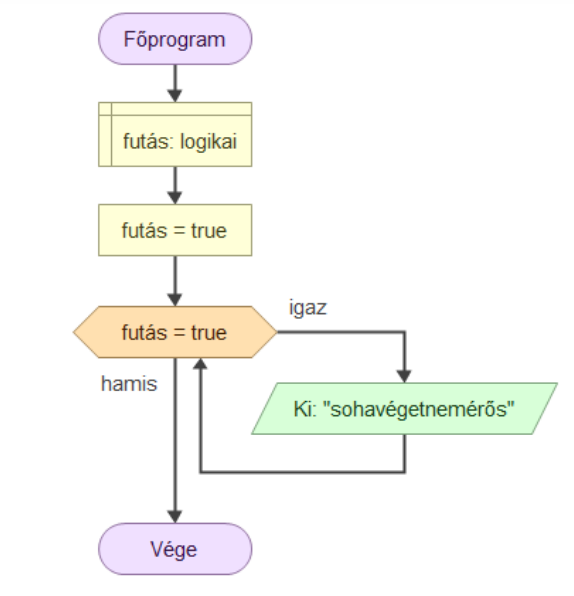

🔁 Végtelen ciklus
FLOWGORITHM · CIKLUS
Végtelen ciklus – amikor a program folyamatosan ismétel
A végtelen ciklus olyan ismétlés, amelynek nincs természetes vége. Ez lehet hiba, de lehet teljesen szándékos működés is.
🔁
Mire jó?
Ha a programnak működés közben folyamatosan figyelnie, ellenőriznie vagy ismételnie kell valamit, szándékosan is használhatunk végtelen ciklust.
Mikor hasznos?
Érzékelők figyeléseA program újra és újra ellenőrzi a környezetet.
JátékokA játék fő ciklusa folyamatosan frissíti az állapotot.
VezérlésA rendszer újra és újra dönthet és reagálhat.
Fontos különbség
A végtelen ciklus nem önmagában hiba. Akkor probléma, ha véletlenül jön létre, és a program nem tud belőle kilépni. Ha viszont a folyamatos működés a cél, akkor szándékosan használjuk.
Példa Flowgorithmban

Mi történik ebben a példában?
1
Létrejön egy logikai változó.A futás változó igaz vagy hamis értéket tárolhat.
2
A futás értéke igaz lesz.Ezután a ciklus feltétele teljesül.
3
A ciklus újra és újra lefut.Mivel a feltétel igaz marad, nincs természetes kilépési pont.
Mikor lesz ebből hiba?
Ha a ciklusnak egyszer véget kellene érnie, de a feltétel soha nem változik hamisra, a program „beleragad” az ismétlésbe. Ez tipikus programozási hiba.
Miért fontos ez érzékelőknél?
Egy érzékelőt általában nem csak egyszer akarunk megnézni. A program folyamatosan újraolvassa az adatot, dönt róla, reagál, majd kezdi elölről.
Gondolkodási minta
ÉRZÉKELÉS → DÖNTÉS → REAKCIÓ → újra ÉRZÉKELÉS
Gyors ellenőrzés
A jelölések nem mentődnek
A pipák csak ezen az oldalon látszanak. Az oldal bezárása után nem maradnak meg.